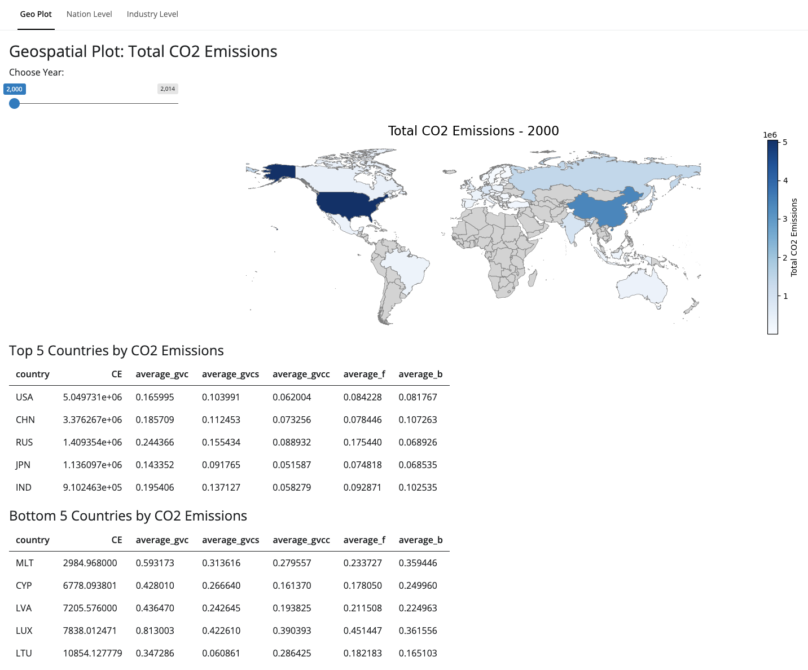
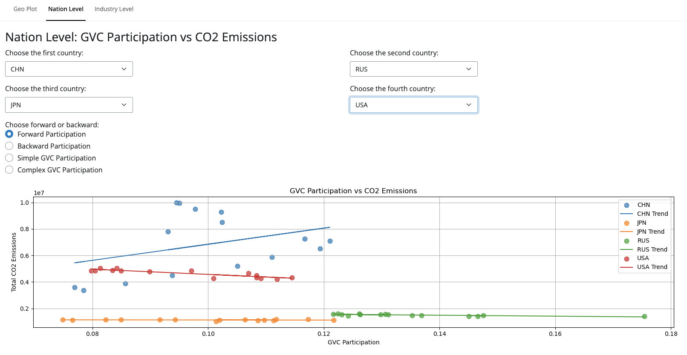
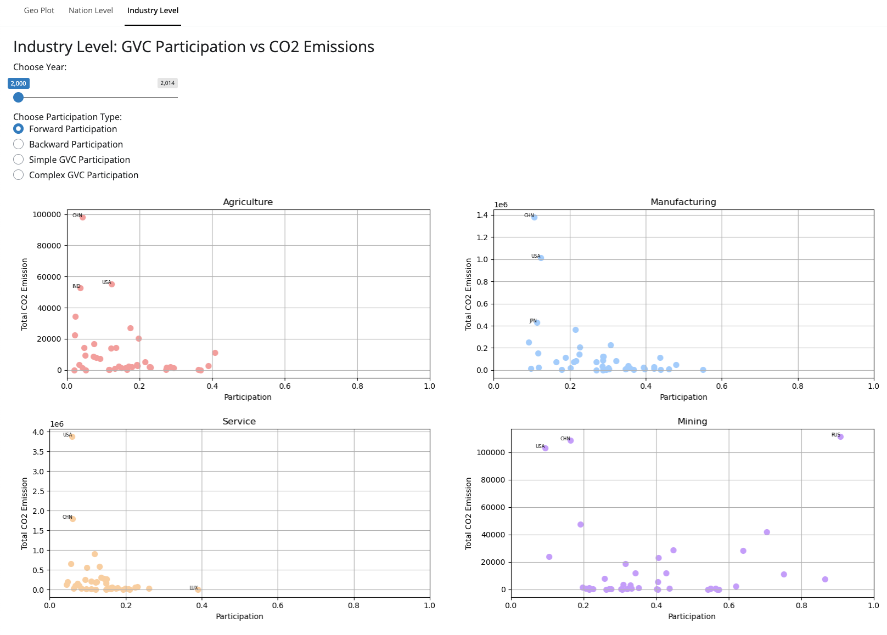

Final Project Write-Up
Group Members
1. Joy Wu: Data cleaning and Altair plots, GitHub: XiaoXiguaZI
2. Betsy Shi: Shiny app, GitHub: BetsyShi00
1 Research Question
Our research investigates the relationship between Global Value Chain (GVC) participation and carbon dioxide (CO2) emissions. Specifically, we explore how GVC participation patterns influence emissions at both country and industry levels, offering insights into global sustainability and policies for emission reduction.
2 Approach and Methodology
2.0.1 Metrics and Datasets
2.0.1.1 1. Key Metrics
We developed five GVC metrics: forward linkage, backward linkage, GVC, GVCS, and GVCC, based on MEASURES OF PARTICIPATION IN GLOBAL VALUE CHAINS AND GLOBAL BUSINESS CYCLES (Wang et al. 2017). These metrics decompose GDP at the country-sector level, emphasizing intermediate goods flows. CO2 emissions (CE) represent environmental impacts.
2.0.1.2 2. Datasets
Two datasets were combined: GVC participation data and CO2 emissions data. The processed data covers 42 countries and 56 industries (2000–2014).
2.0.2 Data Cleaning and Analysis
We merged GVC metrics with CE using country, year, and industry as keys. After addressing missing values and standardizing industry codes, we visualized GVC patterns using static plots and explored relationships through interactive Shiny visualizations. Choosing proper layouts, plot types and interactions for shiny to convey clear information is the most difficult for us as shiny contains various possibility. And we finally decide using map and scatter plot, and put the year into a slider while metrics as checkbox.
2.0.2.1 Static Plots
Figure 1: GVC Participation Trends

Tracks major economies (US, China, Japan) and Russia (2001–2015). GVC participation rose globally until 2011, plateauing post-2012. China showed high GVC participation due to export-driven growth.Figure 2: Global GVC Participation (Geospatial)

Maps GVC participation by country, highlighting developed economies (e.g., Western Europe) as hubs for high-value production.Figure 3: Sectoral Participation
 Categorizes industries into agriculture, mining, manufacturing, and services. Agriculture shows low participation; manufacturing exhibits balanced, high participation.
Categorizes industries into agriculture, mining, manufacturing, and services. Agriculture shows low participation; manufacturing exhibits balanced, high participation.Figure 4: Country-Specific Trends
 Shows GVC metrics vs. CE at the country level for key industries. Manufacturing leads in both metrics and emissions, with China as the global hub.
Shows GVC metrics vs. CE at the country level for key industries. Manufacturing leads in both metrics and emissions, with China as the global hub.
The static analysis revealed sectoral roles in GVCs but lacked dynamic insights. This limitation was addressed through an interactive Shiny app to explore the GVC-CO2 interplay further.
2.0.2.2 Shiny Exploration
Global Overview (Page 1):  Geo-map and tables display CO2 emissions, showing concentration in industrialized nations (e.g., USA, China).
Nation-Level Analysis (Page 2):  Scatter plots reveal suppressive effects of GVCs on emissions, with developed countries better positioned to manage carbon growth.
Industry-Level Analysis (Page 3):
 Industry-specific scatter plots highlight diverse roles. Manufacturing shows wide variation, reflecting industrial and energy efficiency differences.
3 Policy Implications
Promoting sustainable GVCs requires: - Low-Carbon GVCs: Incentivizing clean technologies and efficient processes. - Industry Standards: Tailoring policies for high-emission sectors like manufacturing. - Global Collaboration: Fostering agreements on carbon accountability in supply chains.
4 Future Work
Future research could involve granular data for regional dynamics, dynamic modeling under policy scenarios, and longitudinal studies to account for emerging trends and post-COVID shifts.